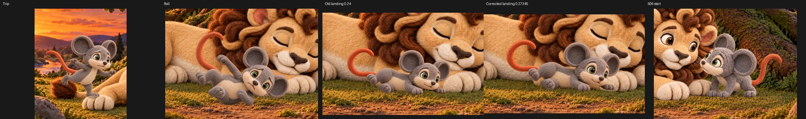
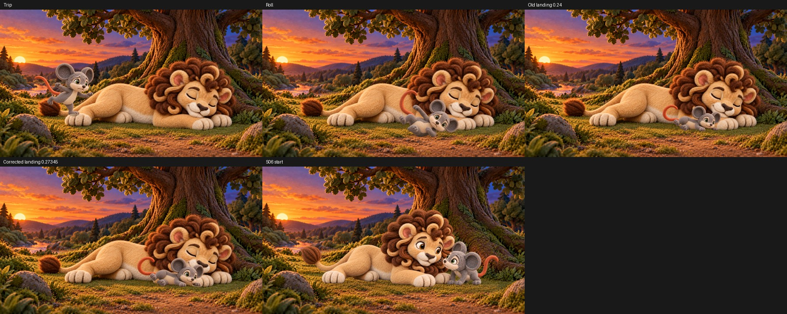

S05 landing scale correction — unselected
Old landing scale 0.24 → anatomy-derived scale 0.27345. One CPU scene preview. Shadow and foreground depth still need review.
 Native corrected candidate
Native corrected candidate

Close-up trip, roll, old landing, corrected landing and S06 start

Complete frame comparison
Scale evidence · Anchor recipe · Receipt · Visual notes